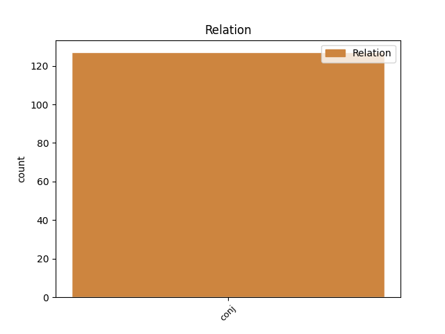
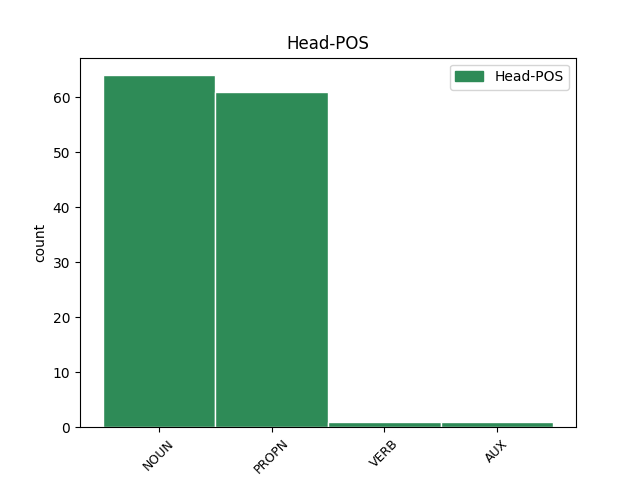
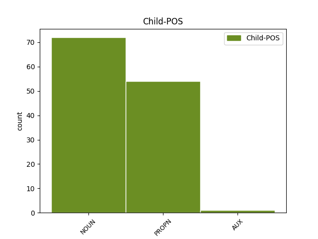

Distribution of features within this leaf



Agreement Rules sorted by frequency.
- When the dependent token is the conjunct(conj) of the head token,
1 அரசுக்கு _ _ _ _ 0 _ _ _
2 ஒத்துழைக்க _ _ _ _ 0 _ _ _
3 வேண்டும் _ _ _ _ 0 _ _ _
4 என _ _ _ _ 0 _ _ _
5 மருத்துவர்கள் மருத்துவர் NOUN NNN-3PA-- Animacy=Anim|Case=Nom|Gender=Com|Number=Plur|Person=3 0 _ _ _
6 , _ _ _ _ 0 _ _ _
7 செவிலியர்கள் _ _ _ _ 0 _ _ _
8 உள்ளிட்ட _ _ _ _ 0 _ _ _
9 மருத்துவப் _ _ _ _ 0 _ _ _
10 பணியாளர்கள் பணியாளர் NOUN NNN-3PA-- Animacy=Anim|Case=Nom|Gender=Com|Number=Plur|Person=3 5 conj _ LTranslit=paṇiyāḷar|Translit=paṇiyāḷarkaḷ
11 யாரையும் _ _ _ _ 0 _ _ _
12 கேட்கவ் _ _ _ _ 0 _ _ _
13 இல்லை _ _ _ _ 0 _ _ _
14 . _ _ _ _ 0 _ _ _
Disagree Examples:
1 டிஜிபி டிஜிபி PROPN NEN-3SH-- Case=Nom|Gender=Com|Number=Sing|Person=3|Polite=Form 0 _ _ _
2 , _ _ _ _ 0 _ _ _
3 தலைமைச் தலைமை NOUN NNN-3SN-- Case=Nom|Gender=Neut|Number=Sing|Person=3 1 conj _ LTranslit=talaimai|Translit=talaimaic
4 செயலர் _ _ _ _ 0 _ _ _
5 ஆக _ _ _ _ 0 _ _ _
6 பெண்கள் _ _ _ _ 0 _ _ _
7 தமிழக _ _ _ _ 0 _ _ _
8 அரசின் _ _ _ _ 0 _ _ _
9 தலைமைச் _ _ _ _ 0 _ _ _
10 செயலாளர் _ _ _ _ 0 _ _ _
11 மற்றும் _ _ _ _ 0 _ _ _
12 காவல் _ _ _ _ 0 _ _ _
13 துறை _ _ _ _ 0 _ _ _
14 இயக்குநர் _ _ _ _ 0 _ _ _
15 என _ _ _ _ 0 _ _ _
16 இரண்டு _ _ _ _ 0 _ _ _
17 முக்கிய _ _ _ _ 0 _ _ _
18 பொறுப்புகளில் _ _ _ _ 0 _ _ _
19 உம் _ _ _ _ 0 _ _ _
20 பெண்கள் _ _ _ _ 0 _ _ _
21 நியமிக்கப் _ _ _ _ 0 _ _ _
22 பட்ட் _ _ _ _ 0 _ _ _
23 உள்ளனர் _ _ _ _ 0 _ _ _
24 . _ _ _ _ 0 _ _ _
1 தலைமைச் _ _ _ _ 0 _ _ _
2 செயலாளர் _ _ _ _ 0 _ _ _
3 ஆக _ _ _ _ 0 _ _ _
4 எஸ்.மாலதிய் எஸ்.மாலதிய் PROPN NEN-3SH-- Case=Nom|Gender=Com|Number=Sing|Person=3|Polite=Form 0 _ _ _
5 உம் _ _ _ _ 0 _ _ _
6 , _ _ _ _ 0 _ _ _
7 போலீஸ் _ _ _ _ 0 _ _ _
8 டி.ஜி.பி.ய் _ _ _ _ 0 _ _ _
9 ஆக _ _ _ _ 0 _ _ _
10 லத்திகா _ _ _ _ 0 _ _ _
11 சரண் சரண் PROPN NEN-3SN-- Case=Nom|Gender=Neut|Number=Sing|Person=3 4 conj _ LTranslit=caraṇ|Translit=caraṇ
12 உம் _ _ _ _ 0 _ _ _
13 உள்ளனர் _ _ _ _ 0 _ _ _
14 . _ _ _ _ 0 _ _ _
1 தமிழர்களை _ _ _ _ 0 _ _ _
2 அவர்களது _ _ _ _ 0 _ _ _
3 சொந்த _ _ _ _ 0 _ _ _
4 இடங்களில் _ _ _ _ 0 _ _ _
5 மறுபடியும் _ _ _ _ 0 _ _ _
6 குடியமர்த்துவது _ _ _ _ 0 _ _ _
7 குறித்த் _ _ _ _ 0 _ _ _
8 உம் _ _ _ _ 0 _ _ _
9 அகதி _ _ _ _ 0 _ _ _
10 முகாம்களில் _ _ _ _ 0 _ _ _
11 உள்ள _ _ _ _ 0 _ _ _
12 தமிழர்களுக்க் தமிழர் PROPN NED-3PA-- Animacy=Anim|Case=Dat|Gender=Com|Number=Plur|Person=3 0 _ _ _
13 உம் _ _ _ _ 0 _ _ _
14 உள்ளூர் _ _ _ _ 0 _ _ _
15 மக்களுக்க் மக்கள் NOUN NND-3SN-- Case=Dat|Gender=Neut|Number=Sing|Person=3 12 conj _ LTranslit=makkaḷ|Translit=makkaḷukk
16 உம் _ _ _ _ 0 _ _ _
17 அடிப்படை _ _ _ _ 0 _ _ _
18 வசதிகளை _ _ _ _ 0 _ _ _
19 செய்து _ _ _ _ 0 _ _ _
20 கொடுப்பது _ _ _ _ 0 _ _ _
21 குறித்த் _ _ _ _ 0 _ _ _
22 உம் _ _ _ _ 0 _ _ _
23 அரசுப் _ _ _ _ 0 _ _ _
24 பிரதிநிதிய் _ _ _ _ 0 _ _ _
25 உடன் _ _ _ _ 0 _ _ _
26 அவர் _ _ _ _ 0 _ _ _
27 ஆலோசித்தார் _ _ _ _ 0 _ _ _
28 . _ _ _ _ 0 _ _ _
1 ஐஐடியில் _ _ _ _ 0 _ _ _
2 மருத்துவப் _ _ _ _ 0 _ _ _
3 படிப்புகள் படிப்பு NOUN NNN-3PN-- Case=Nom|Gender=Neut|Number=Plur|Person=3 0 _ _ _
4 , _ _ _ _ 0 _ _ _
5 வெளிநாட்டு _ _ _ _ 0 _ _ _
6 பேராசிரியர்கள் பேராசிரியர் NOUN NNN-3PA-- Animacy=Anim|Case=Nom|Gender=Com|Number=Plur|Person=3 3 conj _ LTranslit=pērāciriyar|Translit=pērāciriyarkaḷ
7 மற்றும் _ _ _ _ 0 _ _ _
8 மாணவர்கள் _ _ _ _ 0 _ _ _
9 , _ _ _ _ 0 _ _ _
10 புதிய _ _ _ _ 0 _ _ _
11 நுழைவுத் _ _ _ _ 0 _ _ _
12 தேர்வு _ _ _ _ 0 _ _ _
13 முறைகள் _ _ _ _ 0 _ _ _
14 ஆகியவை _ _ _ _ 0 _ _ _
15 குறித்து _ _ _ _ 0 _ _ _
16 ஆலோசிக்கப்படுவத் _ _ _ _ 0 _ _ _
17 ஆக _ _ _ _ 0 _ _ _
18 நேற்று _ _ _ _ 0 _ _ _
19 அமைச்சர் _ _ _ _ 0 _ _ _
20 கபில் _ _ _ _ 0 _ _ _
21 சிபல் _ _ _ _ 0 _ _ _
22 கூறிய் _ _ _ _ 0 _ _ _
23 இருந்தார் _ _ _ _ 0 _ _ _
24 . _ _ _ _ 0 _ _ _
1 ஐஐடியில் _ _ _ _ 0 _ _ _
2 மருத்துவப் _ _ _ _ 0 _ _ _
3 படிப்புகள் _ _ _ _ 0 _ _ _
4 , _ _ _ _ 0 _ _ _
5 வெளிநாட்டு _ _ _ _ 0 _ _ _
6 பேராசிரியர்கள் _ _ _ _ 0 _ _ _
7 மற்றும் _ _ _ _ 0 _ _ _
8 மாணவர்கள் மாணவர் NOUN NNN-3PA-- Animacy=Anim|Case=Nom|Gender=Com|Number=Plur|Person=3 0 _ _ _
9 , _ _ _ _ 0 _ _ _
10 புதிய _ _ _ _ 0 _ _ _
11 நுழைவுத் _ _ _ _ 0 _ _ _
12 தேர்வு _ _ _ _ 0 _ _ _
13 முறைகள் முறை NOUN NNN-3PN-- Case=Nom|Gender=Neut|Number=Plur|Person=3 8 conj _ LTranslit=murai|Translit=muraikaḷ
14 ஆகியவை _ _ _ _ 0 _ _ _
15 குறித்து _ _ _ _ 0 _ _ _
16 ஆலோசிக்கப்படுவத் _ _ _ _ 0 _ _ _
17 ஆக _ _ _ _ 0 _ _ _
18 நேற்று _ _ _ _ 0 _ _ _
19 அமைச்சர் _ _ _ _ 0 _ _ _
20 கபில் _ _ _ _ 0 _ _ _
21 சிபல் _ _ _ _ 0 _ _ _
22 கூறிய் _ _ _ _ 0 _ _ _
23 இருந்தார் _ _ _ _ 0 _ _ _
24 . _ _ _ _ 0 _ _ _